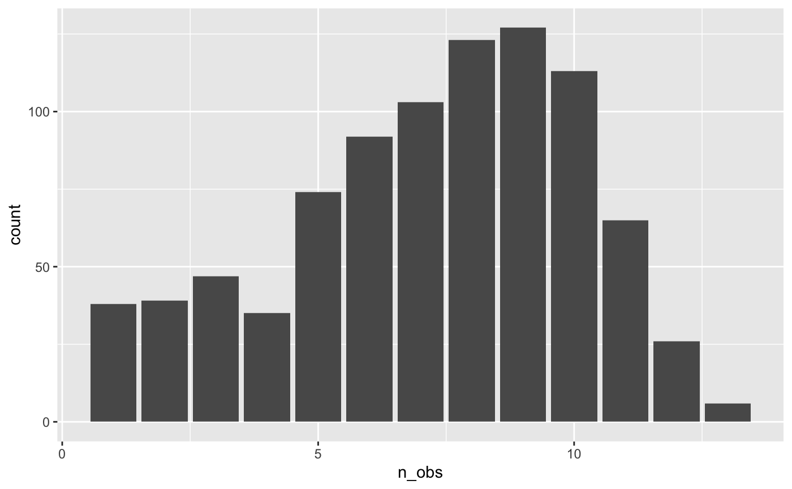
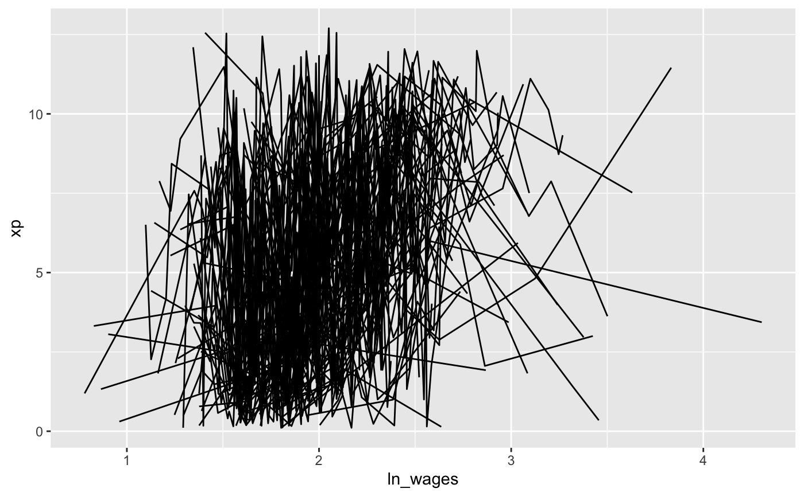
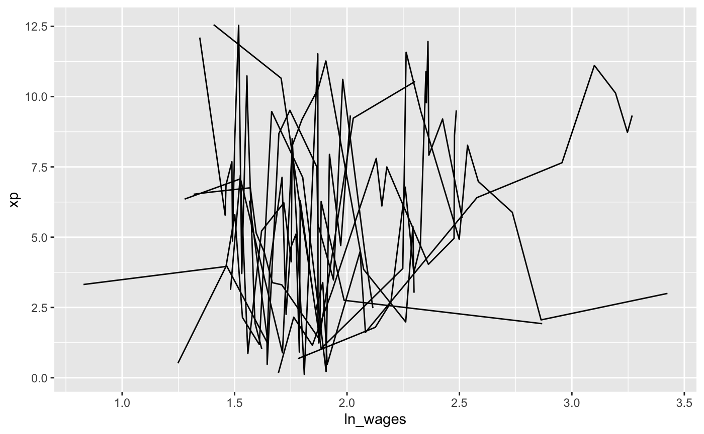
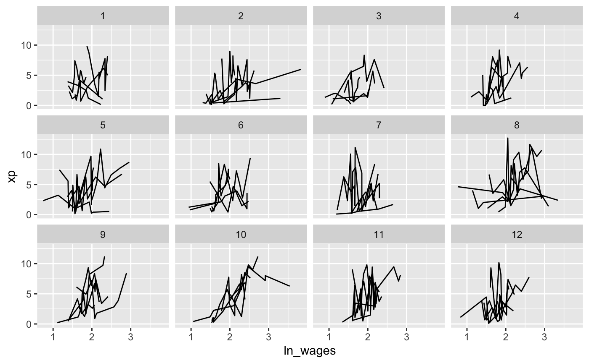

Getting Started
getting-started.RmdWhen we first get a longitudinal dataset, you need to understand some of its structure. This vignette demonstrates part of the process of understanding your new longitudinal data.
Setting up your data
To use brolgar with your work, you should convert your longitudinal data into a time series tsibble using the tsibble package. To do so, you need to identify the unique identifying key, and time index. For example:
To learn more about longitudinal data as time series, see the vignette: Longitudinal Data Structures
Basic summaries of the data
When you first get a dataset, you need to get an overall sense of what is in the data.
How many observations are there?
The number of observations can mean different things We can kind the number of keys using n_keys():
Note that this is a single number, in this case, we have 888 observations.
However, we might want to know how many observations we have for each individual. If we want the number of observations in each key (id), then we can use n_key_obs.
n_key_obs(wages_ts)
#> # A tibble: 888 x 2
#> id n_obs
#> <int> <int>
#> 1 31 8
#> 2 36 10
#> 3 53 8
#> 4 122 10
#> 5 134 12
#> 6 145 9
#> 7 155 11
#> 8 173 6
#> 9 206 3
#> 10 207 11
#> # … with 878 more rowsA plot of this can help provide better understanding of the distribution of observations

Look at as much of the raw data as possible
Can we look at a random sample of many people?
With your longitudinal data, you want to look at as much of the raw data as possible.
We know that looking at the ln_wages and xp yields a plate of spaghetti:

We might instead want to filter down to those with >10 observations, and then look at a random set of individuals, using the filter_n_obs() function.
library(tsibble)
library(dplyr)
#>
#> Attaching package: 'dplyr'
#> The following object is masked from 'package:tsibble':
#>
#> id
#> The following objects are masked from 'package:stats':
#>
#> filter, lag
#> The following objects are masked from 'package:base':
#>
#> intersect, setdiff, setequal, union
wages_ts %>%
filter_n_obs(n_obs > 10)
#> # A tsibble: 1,105 x 10 [!]
#> # Key: id [97]
#> id ln_wages xp ged xp_since_ged black hispanic high_grade
#> <int> <dbl> <dbl> <int> <dbl> <int> <int> <int>
#> 1 134 2.00 0.192 0 0 0 0 11
#> 2 134 2.10 0.972 0 0 0 0 11
#> 3 134 2.32 1.93 0 0 0 0 11
#> 4 134 2.39 2.95 0 0 0 0 11
#> 5 134 2.26 3.92 1 0 0 0 11
#> 6 134 2.33 4.64 1 0.72 0 0 11
#> 7 134 2.30 5.64 1 1.72 0 0 11
#> 8 134 2.67 6.75 1 2.84 0 0 11
#> 9 134 2.81 8.25 1 4.34 0 0 11
#> 10 134 2.93 9.02 1 5.11 0 0 11
#> # … with 1,095 more rows, and 2 more variables: unemploy_rate <dbl>,
#> # n_obs <int>
wages_ts %>%
filter_n_obs(n_obs > 10) %>%
ggplot(aes(x = ln_wages,
y = xp,
group = id)) +
geom_line()
But that’s still a lot of spaghetti.
We could then sample a set of say 100 observations, using sample_n_key():
wages_ts %>%
sample_n_keys(size = 100) %>%
filter_n_obs(n_obs > 10) %>%
ggplot(aes(x = ln_wages,
y = xp,
group = id)) +
geom_line()
That’s not bad, but we can split this up into a few random groups with stratify_keys, and then plot those groups:
wages_ts %>%
filter_n_obs(n_obs > 3) %>%
sample_n_keys(size = 60) %>%
stratify_keys(n_strata = 12) %>%
ggplot(aes(x = ln_wages,
y = xp,
group = id)) +
geom_line() +
facet_wrap(~.strata)
What sort of time period is between measurements?
wages_ts %>%
features(xp, feat_ranges)
#> # A tibble: 888 x 5
#> id min max range_diff iqr
#> <int> <dbl> <dbl> <dbl> <dbl>
#> 1 31 0.015 6.98 6.97 4.40
#> 2 36 0.315 9.60 9.28 6.03
#> 3 53 0.781 1.78 0.996 0.205
#> 4 122 2.04 11.1 9.04 5.63
#> 5 134 0.192 10.8 10.6 6.34
#> 6 145 0.235 7.1 6.86 4.49
#> 7 155 0.985 10.4 9.45 5.66
#> 8 173 0.188 6.40 6.21 4.71
#> 9 206 1.87 4.31 2.44 2.03
#> 10 207 0.525 10.3 9.78 5.64
#> # … with 878 more rowsHighlight patterns of interest
We can break the data into groups based on the slope of xp~ln_wages
wages_slope <- wages_ts %>%
filter_n_obs(n_obs > 10) %>%
add_key_slope(xp ~ ln_wages) %>%
mutate(slope_group = if_else(condition = .slope_ln_wages > 0,
true = "positive slope",
false = "negative slope"))
ggplot(wages_slope,
aes(x = ln_wages,
y = xp,
group = id)) +
geom_line() +
facet_wrap(~slope_group, nrow = 2)